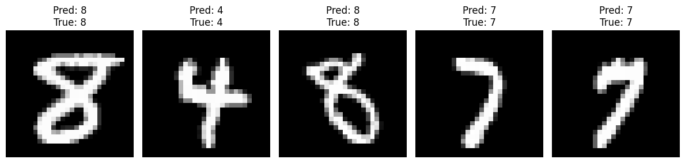

Getting Started with MicroKeras
MicroKeras is a minimal implementation of the Sequential Class from the Keras deep-learning library, built from scratch using Python and NumPy. It provides a simple and intuitive API for building, training, and evaluating neural networks inspired by the Keras API.
Installation
To install MicroKeras, use pip:
Quick Start: MNIST Classification Example
Let's walk through a complete example using MicroKeras to classify handwritten digits from the MNIST dataset. This example will demonstrate how to load data, create a model, train it, make predictions, and save/load the model.
Importing Dependencies
First, let's import the necessary modules:
import numpy as np
from microkeras.models import Sequential
from microkeras.layers import Dense
from microkeras.optimizers import SGD
from microkeras.datasets import mnist
Loading and Preprocessing Data
Next, we'll load the MNIST dataset and preprocess it:
# Load and preprocess MNIST data
(X_train, y_train), (X_test, y_test) = mnist.load_data()
# Reshape and normalize the input data
X_train = X_train.reshape(X_train.shape[0], -1)
X_test = X_test.reshape(X_test.shape[0], -1)
# One-hot encode the labels
y_train = np.eye(10)[y_train]
y_test = np.eye(10)[y_test]
print("Data shapes:")
print(f"X_train: {X_train.shape}, y_train: {y_train.shape}")
print(f"X_test: {X_test.shape}, y_test: {y_test.shape}")
Output:
Creating the Model
Now, let's create our Sequential model:
model = Sequential([
Dense(200, activation='sigmoid', input_shape=(784,)),
Dense(200, activation='sigmoid'),
Dense(10, activation='softmax')
])
This model consists of two hidden layers with sigmoid activation and an output layer with softmax activation, suitable for multi-class classification.
Compiling the Model
We'll compile the model using Stochastic Gradient Descent (SGD) as the optimizer and Categorical Cross-Entropy as the loss function:
optimizer = SGD(learning_rate=0.1)
model.compile(optimizer=optimizer,
loss='categorical_crossentropy',
metrics=['accuracy'])
Training the Model
Let's train the model for 10 epochs with a batch size of 32:
Output:
Epoch 1/10
Batch 3500/3500 - Loss: 4.9410, Acc: 0.9238: : 3712it [00:37, 99.54it/s]
Epoch 2/10
Batch 3500/3500 - Loss: 1.9095, Acc: 0.9746: : 3712it [00:20, 180.73it/s]
Epoch 3/10
Batch 3500/3500 - Loss: 1.5755, Acc: 0.9844: : 3712it [00:21, 168.76it/s]
Epoch 4/10
Batch 3500/3500 - Loss: 1.2145, Acc: 0.9844: : 3712it [00:22, 162.42it/s]
Epoch 5/10
Batch 3500/3500 - Loss: 0.9108, Acc: 0.9902: : 3712it [00:23, 157.83it/s]
Epoch 6/10
Batch 3500/3500 - Loss: 0.7050, Acc: 0.9941: : 3712it [00:21, 175.94it/s]
Epoch 7/10
Batch 3500/3500 - Loss: 0.4757, Acc: 0.9980: : 3712it [00:20, 183.64it/s]
Epoch 8/10
Batch 3500/3500 - Loss: 0.4843, Acc: 1.0000: : 3712it [00:22, 164.84it/s]
Epoch 9/10
Batch 3500/3500 - Loss: 0.4095, Acc: 0.9980: : 3712it [00:22, 164.12it/s]
Epoch 10/10
Batch 3500/3500 - Loss: 0.3842, Acc: 0.9961: : 3712it [00:21, 176.15it/s]
Plotting Training History
We can plot the training history using Matplotlib:
# Plot training history
import matplotlib.pyplot as plt
plt.figure(figsize=(12, 4))
plt.subplot(1, 2, 1)
plt.plot(history['accuracy'], label='Training Accuracy')
plt.title('Model Accuracy')
plt.ylabel('Accuracy')
plt.xlabel('Epoch')
plt.legend()
plt.subplot(1, 2, 2)
plt.plot(history['loss'], label='Training Loss')
plt.title('Model Loss')
plt.ylabel('Loss')
plt.xlabel('Epoch')
plt.legend()
plt.tight_layout()
plt.show()
Output:

Evaluating the Model
After training, we can evaluate the model on the test set:
test_loss, test_accuracy = model.evaluate(X_test, y_test)
print(f"Test accuracy: {test_accuracy:.4f}")
Output:
Making Predictions
Let's make predictions for the first 5 test samples:
predictions = model.predict(X_test[:5])
print("Predictions for the first 5 test samples:")
print(np.argmax(predictions, axis=1))
print("Actual labels:")
print(np.argmax(y_test[:5], axis=1))
# Visualize the predictions
plt.figure(figsize=(12, 4))
for i in range(5):
plt.subplot(1, 5, i+1)
plt.imshow(X_test[i].reshape(28, 28), cmap='gray')
plt.title(f"Pred: {np.argmax(predictions[i])}\nTrue: {np.argmax(y_test[i])}")
plt.axis('off')
plt.tight_layout()
plt.show()
Output:

Saving and Loading the Model
MicroKeras allows you to save and load models:
# Save the model
model.save('mnist_model.json')
# Load the model
loaded_model = Sequential.load('mnist_model.json')
# Compile the loaded model
loaded_model.compile(optimizer=optimizer,
loss='categorical_crossentropy',
metrics=['accuracy'])
# Evaluate the loaded model
loaded_test_loss, loaded_test_accuracy = loaded_model.evaluate(X_test, y_test)
print(f"Loaded model test accuracy: {loaded_test_accuracy:.4f}")
Output:
Viewing Training History
Finally, let's print out the training history:
print("\nTraining History:")
print("Epoch\tAccuracy\tLoss")
for epoch, (accuracy, loss) in enumerate(zip(history['accuracy'], history['loss']), 1):
print(f"{epoch}\t{accuracy:.4f}\t{loss:.4f}")
Output:
Training History:
Epoch Accuracy Loss
1 0.9235 14096.9166
2 0.9467 9728.8764
3 0.9592 7629.1049
4 0.9683 6160.9156
5 0.9730 5208.7316
6 0.9761 4604.9854
7 0.9803 3969.1862
8 0.9828 3443.3674
9 0.9831 3310.2258
10 0.9851 3007.7300
Features
MicroKeras offers the following features:
- Sequential model API
- Dense (fully connected) layers
- Various activation functions (ReLU, Sigmoid, Softmax, Linear)
- Loss functions (Mean Squared Error, Categorical Cross-Entropy)
- Optimizers (Stochastic Gradient Descent)
- Dataset loaders (MNIST, California Housing)
- Model saving and loading
Additional Examples
California Housing Regression
For an example of using MicroKeras for regression tasks, see our California Housing Regression Example.